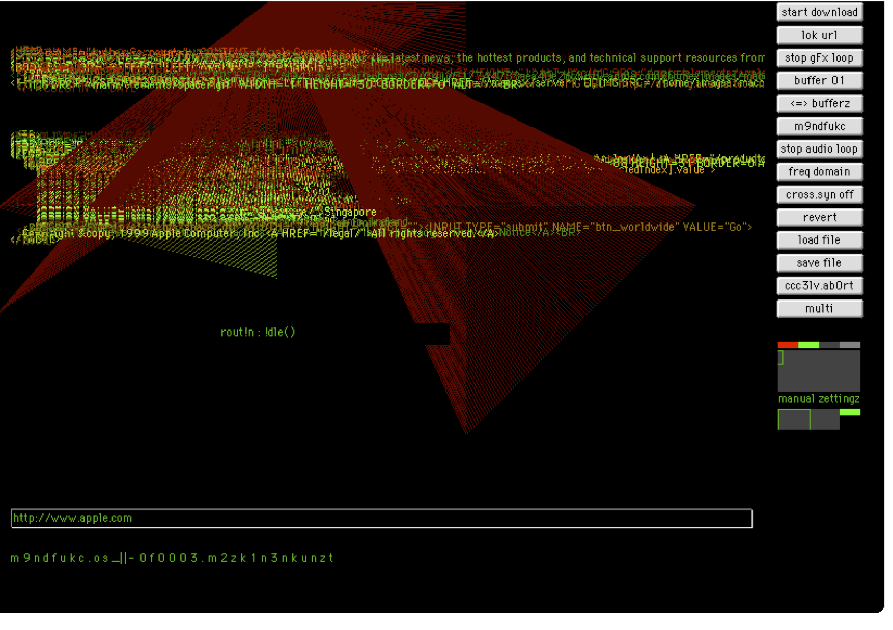

Netochka Nezvanova
Netochka was responsible for creating some of the first real-time audiovisual and graphics applications
Netchoka employed some of the first uses of "internet trolling" within various email lists, acting as a form of creagtive disruption and propoganda. This set a precedant for other internet users to employ actions of harrassment and destructive behavior on-line whether it being negatively effecting or not. She was an internet based performer, acting in an anarchist way. Netochka was elusive but public in their presance on-line, weaving in-and-out of information architectures with varying identities. Their true identity still today is being debated, the persona of Netochka was played by multiple different persons at art festivals in the early 2000s, preserving this idea of a rebellious entity that lives non-space-space that is the
M9NDFUKC.0+99 uses data as raw material, rednering HTML data into graphics. This technique harnesses the potential of randomness, noise and the unexpected. She created programs like this to open up discussion about power relations between technology and the self.. what happens when a program acts as itself?
